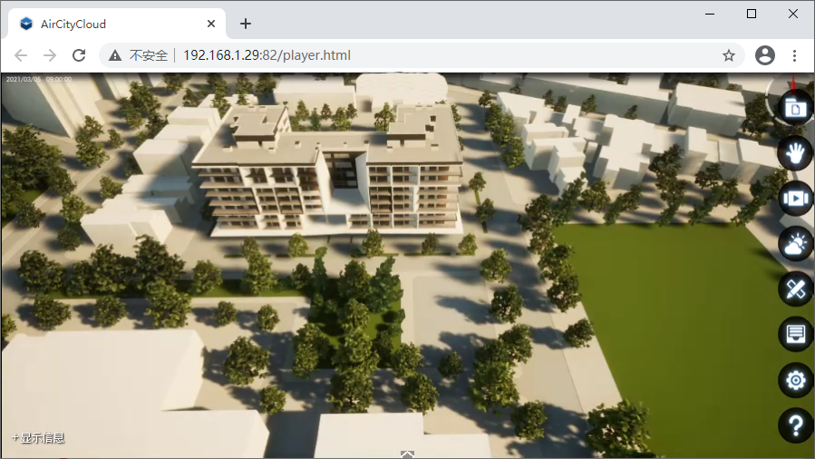

一、获取安装引用
1.1、获取安装
点击DTS-Cloud软件右上角的链接【SDK】打开默认安装目录在SDK文件夹下，获取ac.min.js文件。
1.2、引用API方式
使用HTML方式引用（推荐）
在你工程的HTML页面引用下载的ac.min.js文件，推荐放入lib文件夹内，代码示例如下：
<script src='本地工程目录/lib/ac.min.js'></script>
使用ES方式引用
在你使用组件的页面中，在最开始的js代码区域填写，代码示例如下：
<script>
import * as acapi from '本地工程目录/lib/ac.min';
</script>
二、传统开发模式 【 Hello World示例】
2.1、添加视频流显示区域标签，代码示例如下：
在你工程的HTML页面的 <body> 标签中添加 <div> 标签，供渲染视频流场景使用：
<div id="player" style="width:800px;height:500px;"></div>
2.2、HTML页面引用JavaScript文件，代码示例如下：
<script src='本地工程目录/lib/ac.min.js'></script>
2.3、使用API初始化视频流显示区域并加载场景
function _onReady() {
console.info('此时可以调API了');
}
function _onLog(s, nnl) {
console.info('输出接口调用日志：');
var logStr = (s + (nnl ? "" : '\n'));
console.info(logStr);
}
function _onEvent(event) {
console.info('监听各类交互事件');
if (e.eventtype == 'LeftMouseButtonClick' && e.Type == 'TileLayer') {
console.info('监听图层点击事件');
}
}
//Cloud云渲染服务器地址和端口
var host = '192.168.1.27:8081';
//构造DigitalTwinPlayer对象所需的参数选项，更多参数详情请参考API开发手册里DigitalTwinPlayer对象
var options = {
//必选参数，网页显示视频流的domId
domId: 'player',
//必选参数，二次开发时必须指定，否则无法进行二次开发
apiOptions: {
//必选参数，与云渲染主机通信成功后的回调函数
//注意：只有在onReady之后才可以调用DigitalTwinAPI接口
onReady: _onReady,
onLog: _onLog, //可选参数，日志输出回调函数
onEvent: _onEvent //可选参数，三维场景交互事件回调函数
},
ui: {
startupInfo: true, //可选参数，是否显示页面加载详细信息，默认值false
statusButton: true, //可选参数，是否显示状态按钮，默认false
},
events: {
onVideoLoaded: _onLoaded, //可选参数，视频流加载成功回调函数
onConnClose: _onClose, //可选参数，连接断开回调函数
},
//可选参数，设置三维交互的键盘事件接收者
//注意：接收类型有视频标签(video)，网页文档(document)，空(none)
keyEventTarget: 'none',
};
//构造player对象
var demoPlayer = new DigitalTwinPlayer(host, options);
//构造DigitalTwinAPI对象并初始化
var airCityApi = demoPlayer.getAPI();
注意事项：1、div需要设置长度和宽度 2、查看示例前请先修改云渲染服务器的地址和端口
加载场景成功后效果图如下：

2.4、重置、销毁场景
- 调用__g.reset()方法将场景从当前状态重置为场景初始渲染的状态；调用__g.destroy()方法销毁场景。
销毁场景将停止视频流渲染并断开API连接，HTML页面中的视频流场景将会消失，
但HTML中的DOM元素（即上例中的id为player的div元素）将会保留。场景销毁完成后，在同一页面可以重新创建和加载场景。
2.5、退出云服务
- 调用__g.quit()方法将退出云服务。
三、SPA开发模式
支持和Vue、React和Angular三种框架集成
3.1、在VUE中使用DigitalTwinAPI
示例代码如下：
//待渲染区域模板
<template>
<div id="player"></div>
</template>
<script>
import * as acapi from '../ac.min'
export default{
name: 'Player',
data(){
return {
api:null
}
},
mounted(){
//初始化API实例并启动渲染，DigitalTwinPlayer对象的构造参数请参考API开发文档
this.api = new acapi.DigitalTwinPlayer("192.168.1.27:8081", { "domId": "player",'apiOptions': {...} }).getAPI();
},
destroyed(){
//关闭云渲染并释放资源
this.api.destroy();
}
}
</script>
上述示例代码有几处需要注意的地方：
-
需要将ac.min.js放在Vue项目的static文件夹里（ac.min.js不需要再进行打包编译）
-
需要在mounted事件中初始化DigitalTwinPlayer对象（需要用到DOM元素）
-
与普通的前端开发（使用script标签的方式包含ac.min.js）的区别的地方就是，所有的对象需要使用前缀acapi来引用，例如创建Tag：
let tagData = new TagData(id, .....);
this.api.tag.add(tagData);
3.2、在React中使用DigitalTwinAPI
示例代码如下：
//引入API
import * as acapi from '../ac.min'
class Content extends React.Component {
constructor(props) {
this.api = null;
}
componentDidMount() {
//初始化API实例并启动渲染，DigitalTwinPlayer对象的构造参数请参考API开发文档
this.api = new acapi.DigitalTwinPlayer("192.168.1.27:8081", { "domId": "player",'apiOptions': {...} }).getAPI();
}
componentWillUnmount() {
//关闭云渲染并释放资源
this.api.destroy();
}
render() {
return (
<div>
<div id="player" style="display:none;"></div>
</div>
);
}
}
3.3、在Angular中使用DigitalTwinAPI
示例代码如下：
//引入API
import * as acapi from '../ac.min'
@Component({
selector: 'app-root',
template: `<div id="player" style="display:none;"></div>`
})
export class AppComponent implements AfterViewInit, OnDestroy {
//云渲染api
api;
ngAfterViewInit() {
//初始化API实例并启动渲染，DigitalTwinPlayer对象的构造参数请参考API开发文档
this.api = new acapi.DigitalTwinPlayer("192.168.1.27:8081", { "domId": "player",'apiOptions': {...} }).getAPI();
}
ngOnDestroy() {
//关闭云渲染并释放资源
this.api.destroy();
}
}